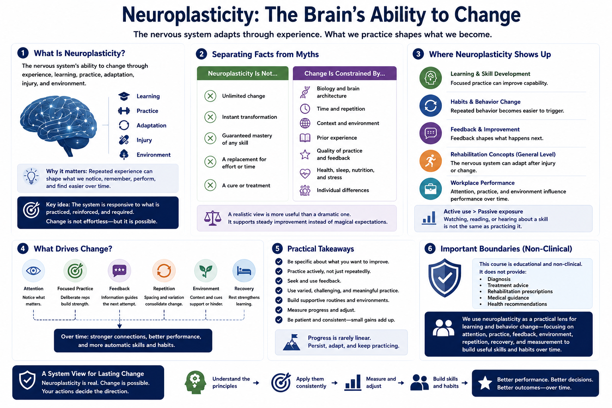

What Is Neuroplasticity?
Connecting to LMS... Progress: in progress

Narration
Neuroplasticity is the nervous system's ability to change through experience, learning, practice, adaptation, injury, and environment. In a learning and performance context, it helps explain why repeated experience can shape what people notice, remember, perform, and find easier over time. The key idea is not that change is effortless. The key idea is that the system is responsive to what is practiced, reinforced, and required.
It is important to separate practical understanding from popular myths. Neuroplasticity does not mean unlimited change, instant transformation, or guaranteed mastery of any skill. Change is constrained by biology, time, context, prior experience, quality of practice, feedback, health, environment, and individual differences. A realistic view is more useful than a dramatic one because it supports steady improvement instead of magical expectations.
Neuroplasticity matters for learning, skill development, habits, rehabilitation concepts at a general level, and workplace performance. It helps explain why focused practice can improve capability, why repeated behavior can become easier to trigger, and why feedback shapes future attempts. It also reminds us that passive exposure is usually weaker than active use. Watching, reading, or hearing about a skill is not the same as practicing it.
This course stays non-clinical. It does not provide diagnosis, treatment advice, rehabilitation prescriptions, or medical guidance. Instead, it uses neuroplasticity as a practical lens for learning and behavior change. The focus is realistic: attention, practice, feedback, environment, repetition, recovery, and measurement can help people build useful skills and habits over time.